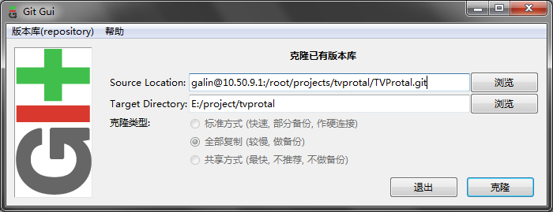
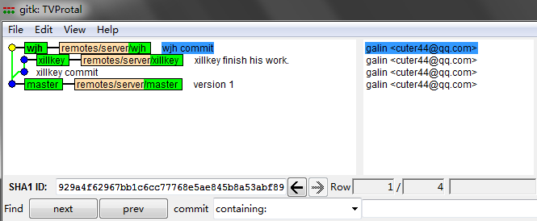

建议这么点, 理由是用户体验比较好
@author galin<cuter44@qq.com>
@license CC 3.0 BY
@version 2.0.0-build-20140421 older version -> ./hello-git-2013.html
通常来说这个时候应该说下 git是什么, 不过出于无障碍阅读的原则, 今年的版本决定不说了. 现在, 只需要将 git 理解成 一个可以在多人环境下随时保存和合并源代码的工具 即可.
然后, 本篇将以 5+0的脑内小剧场 和 wjh的黑历史相结合 去阐述怎么去利用git. 出于时间根本不够入门教学的初衷, 这篇教程会尽量避免复杂的东西. (但这也是git的一个特性之一, 他可以很简单, 也可以geek到完爆蓝星人智商的程度)
那就是在自机部署一个 git 了.
注意这一章不会在堂授课中讲述, 请先行完成.
一个命令搞掂:
apt-get install git
这里是适合普通人的操作步骤:
首先要下载安装包, 以下源你可以随便挑一个:
然后该干嘛干嘛, 除了某些特殊的技能点:
建议这么点, 理由是用户体验比较好

建议这么点, 理由是比较安全

建议这么点, 理由是你得给linux党一点人文关怀
这不是必修的, 不过目前来说, 有个 github id 是很潮爆的哦~才能实现全球流写代码.
比如 5+0@github ≧▽≦
NOTE 其实不只全球流那么简单, github还有很多方便我等程序猿工作的功能, 比如 jekyll 托管(提供你目前正在看的教程的托管), 简单的错误追踪, gist
HINT 因为光缆君的傲娇和GFW的病娇, 你可能要修改hosts才能科学地上网:
185.31.17.184 github.global.ssl.fastly.net

NOTE 标题出自炮姐OP, 题图出自机巧少女, 图片仅供参考.
好吧目前还没有碉堡到这种↑程度咯 (´・ω・｀)
总之什么都好现在可以打开刚刚装好的git吧, 如无意外开始菜单会多出名为 Git GUI 的东西(なに? Linux? 先不管吧...), 会看到这个↓

时间关系我们就先拿这篇教程的仓库来做范例吧, 请随意在原有基础上做修改, 因为我不在 github 上授权的话你是根本提交不了的23333
NOTE ...不过其实授权后也能随意修改, 哪怕会造成毁灭性打击都没关系, 这就是分布式源代码管理系统的彪悍之处.
好吧回来正题, 选"克隆已有版本库",

然后填入以下 param:
Source Location: https://github.com/cuter44/hello-git.git
Target Location: (自己的工程目录)
完成之后会变成以下界面:

然后可以尝试下去点 Repository > Visualize all branches history
然后你会看到一条直线, 这不奇怪, 因为这不是一个协作项目, 在我的刻意维持之下, 这个版本库退化成线性的. 但你仍然可以随意浏览下更新记录, 你会看到很多 ++/-- 的符号, 这些符号简明扼要地描述了我修改过哪些东西.
NOTE 事实上这章说的是怎么提交代码
2013年8月某日, xillkey(前端)刚来准备做网页渲染, galin(后端)在补觉, wjh(技术总监)...不知道在干嘛.
xillkey启动了电脑, 首先它需要从版本库拿到昨晚wjh合并好的新版本(假设他昨晚做的更改已经交给wjh合并了, 当然并不需要每晚合并)并创建自己的分支
HINT 分支是避免冲突的有力武器
分支(branch) > 新建(create) ↓

这样就行了...截图时分支名字忘了填, 跟标识符一样可以随意命名, 但也跟标识符一样存在某种规范
这里假定xillkey增加了一个css文件, 这个改动会被反映在git的面板上↓

如果没看到更改, 可以点下
重新扫描(Rescan)
点文件名可以查看变更的内容, 也就是上一章在历史记录中看到的 ++ 和 -- 们
点图标就可以将所作的变动保存到绿色框的区域下来↓
两个框的操作是互文的, 也就是说假如你误操作了, 再点一下可以不保存修改.

HINT 在这个界面的任何操作都不会影响到你已经写好的代码, 所以请放心大胆地乱来 _(:з」∠)_
xillkey可以随时点提交(commit)保存已经缓存的改动, 提交操作不会实际上传数据到服务器, 而是将在本地生成一个保存点.
如果这时候再查看所有分支历史(Visualize all branch history)会看到这个样子

假如xillkey发现他将代码改到太糟糕想倒回去的话(比如写了一大堆才发现IE根本不鸟...), 他可以在这个界面想要回退到的节点上面点右键 > Reset xillkey branch to here, 然后代码就会被回滚到相应位置了.
若干小时后...
xillkey认为他已经完成工作了, 他可以最后commit一次, 然后点上传(push)(再强调一次只commit不push的话是不会将修改打入服务器的, FTS今天就是这样坑我的)

可以一次上传多个分支, 只有选中分支的更改会上传到服务器. 目标版本库的话由于只有一个所以不用费心了.
上传后的版本库如图↓(注意wjh在这几个小时内也做出了自己的更改)

根据老邝原本的设定是要由wjh负责做整合的. 所以此时 xillkey 只需要确认上传完了就可以关机走人了, 当然走之前还需要:
xillkey(^ω^): 搞掂, wjh记得将我改的部分合并进去~
wjh(T▽T): はい、はい。。。